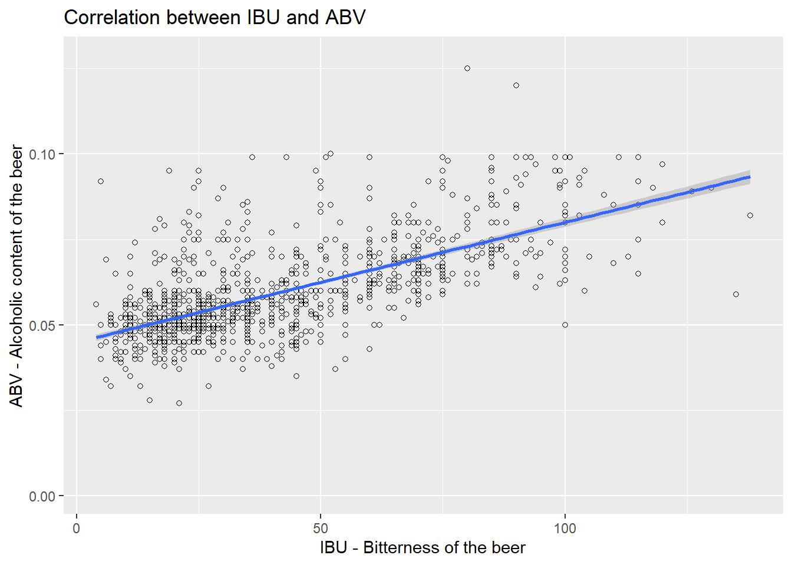

DDS Case Study
Sid Swarupananda and Sean McWhirter
October 25, 2019
Hello and thank you for joining Sean and me to review some insights that we were able to gain with the data that this committee has given us. We will be covering all of the initial questions that you all posed in the beginning of this process, as well as some other potentially valuable information that could be of use to you all here at Budweiser.
Libraries used
library(plyr)## Warning: package 'plyr' was built under R version 3.5.3library(dplyr)## Warning: package 'dplyr' was built under R version 3.5.3##
## Attaching package: 'dplyr'## The following objects are masked from 'package:plyr':
##
## arrange, count, desc, failwith, id, mutate, rename, summarise,
## summarize## The following objects are masked from 'package:stats':
##
## filter, lag## The following objects are masked from 'package:base':
##
## intersect, setdiff, setequal, unionlibrary(magrittr)## Warning: package 'magrittr' was built under R version 3.5.3library(rlang)## Warning: package 'rlang' was built under R version 3.5.3##
## Attaching package: 'rlang'## The following object is masked from 'package:magrittr':
##
## set_nameslibrary(ggplot2)## Warning: package 'ggplot2' was built under R version 3.5.3library(ggthemes)## Warning: package 'ggthemes' was built under R version 3.5.3library(knitr)## Warning: package 'knitr' was built under R version 3.5.3library(kableExtra)## Warning: package 'kableExtra' was built under R version 3.5.3##
## Attaching package: 'kableExtra'## The following object is masked from 'package:dplyr':
##
## group_rowslibrary(class)
library(caret)## Warning: package 'caret' was built under R version 3.5.3## Loading required package: latticelibrary(e1071)## Warning: package 'e1071' was built under R version 3.5.3library(ggthemes)
library(tidyverse)## Warning: package 'tidyverse' was built under R version 3.5.3## -- Attaching packages --------------------------------------------------------------------------------- tidyverse 1.2.1 --## v tibble 2.1.3 v purrr 0.3.2
## v tidyr 1.0.0 v stringr 1.4.0
## v readr 1.3.1 v forcats 0.4.0## Warning: package 'tibble' was built under R version 3.5.3## Warning: package 'tidyr' was built under R version 3.5.3## Warning: package 'readr' was built under R version 3.5.3## Warning: package 'purrr' was built under R version 3.5.3## Warning: package 'stringr' was built under R version 3.5.3## Warning: package 'forcats' was built under R version 3.5.3## -- Conflicts ------------------------------------------------------------------------------------ tidyverse_conflicts() --
## x purrr::%@%() masks rlang::%@%()
## x dplyr::arrange() masks plyr::arrange()
## x purrr::as_function() masks rlang::as_function()
## x purrr::compact() masks plyr::compact()
## x dplyr::count() masks plyr::count()
## x tidyr::extract() masks magrittr::extract()
## x dplyr::failwith() masks plyr::failwith()
## x dplyr::filter() masks stats::filter()
## x purrr::flatten() masks rlang::flatten()
## x purrr::flatten_chr() masks rlang::flatten_chr()
## x purrr::flatten_dbl() masks rlang::flatten_dbl()
## x purrr::flatten_int() masks rlang::flatten_int()
## x purrr::flatten_lgl() masks rlang::flatten_lgl()
## x purrr::flatten_raw() masks rlang::flatten_raw()
## x kableExtra::group_rows() masks dplyr::group_rows()
## x dplyr::id() masks plyr::id()
## x purrr::invoke() masks rlang::invoke()
## x dplyr::lag() masks stats::lag()
## x purrr::lift() masks caret::lift()
## x purrr::list_along() masks rlang::list_along()
## x purrr::modify() masks rlang::modify()
## x dplyr::mutate() masks plyr::mutate()
## x purrr::prepend() masks rlang::prepend()
## x dplyr::rename() masks plyr::rename()
## x purrr::set_names() masks rlang::set_names(), magrittr::set_names()
## x purrr::splice() masks rlang::splice()
## x dplyr::summarise() masks plyr::summarise()
## x dplyr::summarize() masks plyr::summarize()library(GGally)## Warning: package 'GGally' was built under R version 3.5.3##
## Attaching package: 'GGally'## The following object is masked from 'package:dplyr':
##
## nasalibrary(doBy)
library(ggmap)## Warning: package 'ggmap' was built under R version 3.5.3## Google's Terms of Service: https://cloud.google.com/maps-platform/terms/.## Please cite ggmap if you use it! See citation("ggmap") for details.##
## Attaching package: 'ggmap'## The following object is masked from 'package:magrittr':
##
## insetlibrary(maps)## Warning: package 'maps' was built under R version 3.5.3##
## Attaching package: 'maps'## The following object is masked from 'package:purrr':
##
## map## The following object is masked from 'package:plyr':
##
## ozonelibrary(openintro)## Warning: package 'openintro' was built under R version 3.5.2## Please visit openintro.org for free statistics materials##
## Attaching package: 'openintro'## The following object is masked from 'package:caret':
##
## dotPlot## The following object is masked from 'package:lattice':
##
## lsegments## The following object is masked from 'package:ggplot2':
##
## diamonds## The following objects are masked from 'package:datasets':
##
## cars, treeslibrary(stringr)Question 1. How many breweries are present in each state?
# Read in beer and breweries data set using read.csv
Beers <- read.csv("https://raw.githubusercontent.com/siddeshwar627/MSDS6306_CaseStudy_01/master/Beers.csv", header = TRUE, sep = ",")
Breweries <- read.csv("https://raw.githubusercontent.com/siddeshwar627/MSDS6306_CaseStudy_01/master/Breweries.csv", header = TRUE, sep = ",")
detach(package:plyr)
library(dplyr)
BrewPerState <-table(Breweries$State)
BrewPerState##
## AK AL AR AZ CA CO CT DC DE FL GA HI IA ID IL IN KS KY
## 7 3 2 11 39 47 8 1 2 15 7 4 5 5 18 22 3 4
## LA MA MD ME MI MN MO MS MT NC ND NE NH NJ NM NV NY OH
## 5 23 7 9 32 12 9 2 9 19 1 5 3 3 4 2 16 15
## OK OR PA RI SC SD TN TX UT VA VT WA WI WV WY
## 6 29 25 5 4 1 3 28 4 16 10 23 20 1 4Breweries %>% group_by(State) %>% summarize(count = n()) %>% ggplot(aes(x=reorder(State, count), y = count)) +
geom_bar(stat="identity", width=.5, fill="tomato3") +
labs(title="Ordered Bar Chart",
x = "State",
y = "Brewereis Count",
subtitle="Breweries Per State Count",
caption="source: Breweries.csv") +
theme(axis.text.x = element_text(angle=65, vjust=0.6))
In the United States, range of breweries per state go from 1 brewery to 47 breweries. The average number of craft breweries per state is 10.9.
Top States with the most breweries include:
Colorado (47), California (39), Michigan (32), Oregon (29), Texas (28)
Pennsylvania (25), Massachusetts (23), Washington (23), Indiana (22), and Wisconsin (20) are the next five in order
Note: The top five states account for 31% of all breweries within the United States
Bottom States
North Dakota, South Dakota, West Virginia and District of Columbia are at the bottom with one brewery each.
On another note, North Dakota, South Dakota and District of Columbia have a small population. But West Virginia is 38 in total population list in United States. If you are looking for an opportunity to expand into Beer market, West Virginia may be a good place to look at.
Question 2. Merge beer data with the breweries data. Print the first 6 observations and the last six observations to check the merged file.
# Renamed Brewery_id to Brew_ID to satisfy merging requirement
Beers <- rename(Beers, Brew_ID = Brewery_id)
BrewPub <- merge(Beers, Breweries, by="Brew_ID")
# Rename Name.x as Beer_Name and Name.y as Brewery_Name
BrewPub <- rename(BrewPub, Beer_Name = Name.x)
BrewPub <- rename(BrewPub, Brewery_Name = Name.y)
# First 6 observations of the merged file
kable(head(BrewPub, 6), align = 'c')| Brew_ID | Beer_Name | Beer_ID | ABV | IBU | Style | Ounces | Brewery_Name | City | State |
|---|---|---|---|---|---|---|---|---|---|
| 1 | Get Together | 2692 | 0.045 | 50 | American IPA | 16 | NorthGate Brewing | Minneapolis | MN |
| 1 | Maggie’s Leap | 2691 | 0.049 | 26 | Milk / Sweet Stout | 16 | NorthGate Brewing | Minneapolis | MN |
| 1 | Wall’s End | 2690 | 0.048 | 19 | English Brown Ale | 16 | NorthGate Brewing | Minneapolis | MN |
| 1 | Pumpion | 2689 | 0.060 | 38 | Pumpkin Ale | 16 | NorthGate Brewing | Minneapolis | MN |
| 1 | Stronghold | 2688 | 0.060 | 25 | American Porter | 16 | NorthGate Brewing | Minneapolis | MN |
| 1 | Parapet ESB | 2687 | 0.056 | 47 | Extra Special / Strong Bitter (ESB) | 16 | NorthGate Brewing | Minneapolis | MN |
# Last 6 observations of the merged file
kable(tail(BrewPub,6), align = 'c')| Brew_ID | Beer_Name | Beer_ID | ABV | IBU | Style | Ounces | Brewery_Name | City | State | |
|---|---|---|---|---|---|---|---|---|---|---|
| 2405 | 556 | Pilsner Ukiah | 98 | 0.055 | NA | German Pilsener | 12 | Ukiah Brewing Company | Ukiah | CA |
| 2406 | 557 | Heinnieweisse Weissebier | 52 | 0.049 | NA | Hefeweizen | 12 | Butternuts Beer and Ale | Garrattsville | NY |
| 2407 | 557 | Snapperhead IPA | 51 | 0.068 | NA | American IPA | 12 | Butternuts Beer and Ale | Garrattsville | NY |
| 2408 | 557 | Moo Thunder Stout | 50 | 0.049 | NA | Milk / Sweet Stout | 12 | Butternuts Beer and Ale | Garrattsville | NY |
| 2409 | 557 | Porkslap Pale Ale | 49 | 0.043 | NA | American Pale Ale (APA) | 12 | Butternuts Beer and Ale | Garrattsville | NY |
| 2410 | 558 | Urban Wilderness Pale Ale | 30 | 0.049 | NA | English Pale Ale | 12 | Sleeping Lady Brewing Company | Anchorage | AK |
Question 3. Address the missing values in each column.
summary(BrewPub)## Brew_ID Beer_Name Beer_ID
## Min. : 1.0 Nonstop Hef Hop : 12 Min. : 1.0
## 1st Qu.: 94.0 Dale's Pale Ale : 6 1st Qu.: 808.2
## Median :206.0 Oktoberfest : 6 Median :1453.5
## Mean :232.7 Longboard Island Lager: 4 Mean :1431.1
## 3rd Qu.:367.0 1327 Pod's ESB : 3 3rd Qu.:2075.8
## Max. :558.0 Boston Lager : 3 Max. :2692.0
## (Other) :2376
## ABV IBU Style
## Min. :0.00100 Min. : 4.00 American IPA : 424
## 1st Qu.:0.05000 1st Qu.: 21.00 American Pale Ale (APA) : 245
## Median :0.05600 Median : 35.00 American Amber / Red Ale : 133
## Mean :0.05977 Mean : 42.71 American Blonde Ale : 108
## 3rd Qu.:0.06700 3rd Qu.: 64.00 American Double / Imperial IPA: 105
## Max. :0.12800 Max. :138.00 American Pale Wheat Ale : 97
## NA's :62 NA's :1005 (Other) :1298
## Ounces Brewery_Name City
## Min. : 8.40 Brewery Vivant : 62 Grand Rapids: 66
## 1st Qu.:12.00 Oskar Blues Brewery : 46 Portland : 64
## Median :12.00 Sun King Brewing Company : 38 Chicago : 55
## Mean :13.59 Cigar City Brewing Company: 25 Indianapolis: 43
## 3rd Qu.:16.00 Sixpoint Craft Ales : 24 San Diego : 42
## Max. :32.00 Hopworks Urban Brewery : 23 Boulder : 41
## (Other) :2192 (Other) :2099
## State
## CO : 265
## CA : 183
## MI : 162
## IN : 139
## TX : 130
## OR : 125
## (Other):1406MissingValues <- sapply(BrewPub, function(x)sum(is.na(x)))
# Used kable library to make document more presentable
MissingValues %>% kable("html") %>% kable_styling()| x | |
|---|---|
| Brew_ID | 0 |
| Beer_Name | 0 |
| Beer_ID | 0 |
| ABV | 62 |
| IBU | 1005 |
| Style | 0 |
| Ounces | 0 |
| Brewery_Name | 0 |
| City | 0 |
| State | 0 |
ABV and IBU are the only columns with missing values. ABV is missing 62 values, and IBU is mising 1005 values. Even if we need to filter out all 1005 misisng IBU observations, we would still have 1,405. If the ABV missing values do not overlap, we would still have 1,343, which is a significant sample size.
4. Compute the median alcohol content and international bitterness unit for each state. Plot a bar chart to compare.
# Compute the median alcohol content unit for each state.
Alcohol <- BrewPub %>% na.omit() %>% group_by(State) %>% summarize(Median = median(ABV)) %>% arrange(Median)
# Compute the median international bitterness unit for each state.
Bitter <- BrewPub %>% na.omit() %>% group_by(State) %>% summarize(Median = median(IBU)) %>% arrange(Median)
# Plot a bar chart to compare ABV by state
ggplot(data=Alcohol, aes(x=State, y=Median)) +
geom_bar(stat="identity", fill="blue")+
ggtitle("Median ABV by State") +
labs(x="State",y="ABV")# Plot a bar chart to compare IBU by state
ggplot(data=Bitter, aes(x=State, y=Median)) +
geom_bar(stat="identity", fill="blue")+
ggtitle("Median IBU by State") +
labs(x="State",y="IBU")
Here we have 2 charts, which shows Medial alcohol content per state and Median international bitterness per state
As you can see in both the charts the medial alcohol content per state is fairly consistent around 6% and median international bitterness per state is very much varied.
Question 5. Which state has the maximum alcoholic (ABV) beer? Which state has the most bitter (IBU) beer?
#Which state has the maximum ABV beer? Wich state has the highest IBU beer?
kable(BrewPub[which.max(BrewPub$ABV),])| Brew_ID | Beer_Name | Beer_ID | ABV | IBU | Style | Ounces | Brewery_Name | City | State | |
|---|---|---|---|---|---|---|---|---|---|---|
| 375 | 52 | Lee Hill Series Vol. 5 - Belgian Style Quadrupel Ale | 2565 | 0.128 | NA | Quadrupel (Quad) | 19.2 | Upslope Brewing Company | Boulder | CO |
kable(BrewPub[which.max(BrewPub$IBU),])| Brew_ID | Beer_Name | Beer_ID | ABV | IBU | Style | Ounces | Brewery_Name | City | State | |
|---|---|---|---|---|---|---|---|---|---|---|
| 1857 | 375 | Bitter Bitch Imperial IPA | 980 | 0.082 | 138 | American Double / Imperial IPA | 12 | Astoria Brewing Company | Astoria | OR |
We used which.max on our BrewPub dataset to get the maximum values in ABV and IBU columns. We identified Colorado as having the beer with the highest ABV, at 12.8% and we identified Oregon has having the beer with the highest IBU, at 138.
Question 6. Comment on the summary statistics and distribution of the ABV variable.
BeerSummary <- (summary(BrewPub$ABV))
print(BeerSummary)## Min. 1st Qu. Median Mean 3rd Qu. Max. NA's
## 0.00100 0.05000 0.05600 0.05977 0.06700 0.12800 62ggplot(BrewPub, aes(x=ABV)) + geom_histogram(color = "blue", fill = "white") + xlab("Alcohol by Volume")## `stat_bin()` using `bins = 30`. Pick better value with `binwidth`.## Warning: Removed 62 rows containing non-finite values (stat_bin).When we look at summary statistics of Alcohol by volume, we see that we have some beers don’t even measure 1%. Median was 5.6%, Mean or average was 5.9% and the maximum ABV was around 13%. Also, note that we are missing 62 values in the dataset that we were provided
Looking at a histogram of the data, it seems to be a bit right-skewed. This makes sense because beer is not meant to be a very high ABV drink-the high ABV beers would be more rare.
Question 7. Is there an apparent relationship between the bitterness of the beer and its alcoholic content? Draw a scatter plot. Make your best judgment of a relationship and EXPLAIN your answer.
# Draw a scatter plot to compare relationship between beer bitterness and alcohol content
ggplot(BrewPub, aes(x=IBU, y= ABV)) +
geom_point(shape=1) +
geom_smooth(method=lm) + # add linear regression line
ggtitle("Correlation between IBU and ABV") +
labs(x="IBU - Bitterness of the beer",y="ABV - Alcoholic content of the beer")## Warning: Removed 1005 rows containing non-finite values (stat_smooth).## Warning: Removed 1005 rows containing missing values (geom_point).
# Pearson's product-moment correlation
cor.test(BrewPub$ABV,BrewPub$IBU)##
## Pearson's product-moment correlation
##
## data: BrewPub$ABV and BrewPub$IBU
## t = 33.863, df = 1403, p-value < 2.2e-16
## alternative hypothesis: true correlation is not equal to 0
## 95 percent confidence interval:
## 0.6407982 0.6984238
## sample estimates:
## cor
## 0.6706215In this analysis, we examined data from two datasets regarding beers and breweries throughout the US. We examined the structure of this data, cleaned them, and combined them. We then performed various analyses, such as calculating median values for IBU and ABV by state, and determining which states had the beers with the highest ABV and IBU values. We finished by looking for a potential relationship between IBU and ABV, and found that there is evidence to suggest that a positive correlation exists between the two.
The Pearson correlation coefficient, r, can take a range of values from +1 to -1. A value of 0 indicates that there is no association between the two variables. A value greater than 0 indicates a positive association; that is, as the value of one variable increases, so does the value of the other variable. Here we got the cor as 0.67 between ABV and IBU which suggests there is a positive correlation.
Question 8: Budweiser would also like to investigate the difference with respect to IBU and ABV between IPAs (India Pale Ales) and other types of Ale (any beer with “Ale” in its name other than IPA). You decide to use KNN clustering to investigate this relationship. Provide statistical evidence one way or the other. You can of course assume your audience is comfortable with percentages . KNN is very easy to understand.
#The following code groups the beers by "India Pale Ale," "Other Ale," and "Other Type."
BrewPub$BeerType <- ifelse(grepl("Ale$", BrewPub$Style, ignore.case = T), "Other Type Ale",
ifelse(grepl("IPA$", BrewPub$Style, ignore.case = T ), "India Pale Ale", "Other Type"))
#Change BeerType to a factor and IBU/ABV to numeric
BrewPub$BeerType = as.factor(BrewPub$BeerType)
BrewPub$ABV<-as.numeric(as.character(BrewPub$ABV))
BrewPub$IBU<-as.numeric(as.character(BrewPub$IBU))
# When looking at the beers by ounces, it appears that IPAs have higher median ABV values than other Ales.
#Selecting for only IPAs and Other Ales.
BrewPubIPAOther = BrewPub %>% filter(!is.na(BeerType) & !is.na(IBU) &!is.na(ABV)) %>%
filter(BeerType == "India Pale Ale" | BeerType == "Other Type Ale")
summary(BrewPubIPAOther)## Brew_ID Beer_Name Beer_ID
## Min. : 1.0 Nonstop Hef Hop : 12 Min. : 4.0
## 1st Qu.: 94.0 Dagger Falls IPA : 3 1st Qu.: 792.5
## Median :204.0 312 Urban Wheat Ale: 2 Median :1487.0
## Mean :223.5 Blacktop Blonde : 2 Mean :1427.0
## 3rd Qu.:337.5 BLAKKR : 2 3rd Qu.:2071.5
## Max. :547.0 Bombshell Blonde : 2 Max. :2692.0
## (Other) :748
## ABV IBU Style
## Min. :0.0350 Min. : 4.00 American IPA :301
## 1st Qu.:0.0520 1st Qu.: 24.00 American Amber / Red Ale : 77
## Median :0.0620 Median : 50.00 American Double / Imperial IPA: 75
## Mean :0.0629 Mean : 51.34 American Blonde Ale : 61
## 3rd Qu.:0.0700 3rd Qu.: 70.50 American Pale Wheat Ale : 61
## Max. :0.0990 Max. :138.00 American Brown Ale : 38
## (Other) :158
## Ounces Brewery_Name City
## Min. :12.00 Hopworks Urban Brewery : 19 Portland : 28
## 1st Qu.:12.00 Oskar Blues Brewery : 14 San Diego: 24
## Median :12.00 Cigar City Brewing Company: 13 Tampa : 17
## Mean :13.59 Sixpoint Craft Ales : 13 Seattle : 15
## 3rd Qu.:16.00 Sun King Brewing Company : 12 Boulder : 14
## Max. :32.00 Big Sky Brewing Company : 11 Brooklyn : 14
## (Other) :689 (Other) :659
## State BeerType
## CA : 84 India Pale Ale:385
## CO : 71 Other Type : 0
## OR : 56 Other Type Ale:386
## TX : 44
## IN : 40
## FL : 28
## (Other):448BrewPubIPAOther = droplevels(BrewPubIPAOther, exclude = "Other Type")
summary(BrewPubIPAOther)## Brew_ID Beer_Name Beer_ID
## Min. : 1.0 Nonstop Hef Hop : 12 Min. : 4.0
## 1st Qu.: 94.0 Dagger Falls IPA : 3 1st Qu.: 792.5
## Median :204.0 312 Urban Wheat Ale: 2 Median :1487.0
## Mean :223.5 Blacktop Blonde : 2 Mean :1427.0
## 3rd Qu.:337.5 BLAKKR : 2 3rd Qu.:2071.5
## Max. :547.0 Bombshell Blonde : 2 Max. :2692.0
## (Other) :748
## ABV IBU Style
## Min. :0.0350 Min. : 4.00 American IPA :301
## 1st Qu.:0.0520 1st Qu.: 24.00 American Amber / Red Ale : 77
## Median :0.0620 Median : 50.00 American Double / Imperial IPA: 75
## Mean :0.0629 Mean : 51.34 American Blonde Ale : 61
## 3rd Qu.:0.0700 3rd Qu.: 70.50 American Pale Wheat Ale : 61
## Max. :0.0990 Max. :138.00 American Brown Ale : 38
## (Other) :158
## Ounces Brewery_Name City
## Min. :12.00 Hopworks Urban Brewery : 19 Portland : 28
## 1st Qu.:12.00 Oskar Blues Brewery : 14 San Diego: 24
## Median :12.00 Cigar City Brewing Company: 13 Tampa : 17
## Mean :13.59 Sixpoint Craft Ales : 13 Seattle : 15
## 3rd Qu.:16.00 Sun King Brewing Company : 12 Boulder : 14
## Max. :32.00 Big Sky Brewing Company : 11 Brooklyn : 14
## (Other) :689 (Other) :659
## State BeerType
## CA : 84 India Pale Ale:385
## CO : 71 Other Type Ale:386
## OR : 56
## TX : 44
## IN : 40
## FL : 28
## (Other):448BrewPubIPAOther %>% ggplot(aes(x=IBU, ABV, color = BeerType)) + geom_point()set.seed(6)
splitPerc = .75
trainIndices = sample(1:dim(BrewPubIPAOther)[1],round(splitPerc * dim(BrewPubIPAOther)[1]))
train = BrewPubIPAOther[trainIndices,]
test = BrewPubIPAOther[-trainIndices,]
BrewPubIPAOther %>% ggplot(aes(x = IBU, ABV, color = BeerType)) + geom_point() + geom_smooth() +
ggtitle("ABV vs IBU") + theme_economist()## `geom_smooth()` using method = 'loess' and formula 'y ~ x'
Knn method to investigate the difference with respect to IBU and ABV between IPAs and Other Type of Ale
# k = 3
classifications = knn(train[,c(3,4)],test[,c(3,4)],train$BeerType, prob = TRUE, k = 3)
table(classifications,test$BeerType)##
## classifications India Pale Ale Other Type Ale
## India Pale Ale 44 48
## Other Type Ale 40 61confusionMatrix(table(classifications,test$BeerType))## Confusion Matrix and Statistics
##
##
## classifications India Pale Ale Other Type Ale
## India Pale Ale 44 48
## Other Type Ale 40 61
##
## Accuracy : 0.544
## 95% CI : (0.471, 0.6157)
## No Information Rate : 0.5648
## P-Value [Acc > NIR] : 0.7438
##
## Kappa : 0.0825
##
## Mcnemar's Test P-Value : 0.4555
##
## Sensitivity : 0.5238
## Specificity : 0.5596
## Pos Pred Value : 0.4783
## Neg Pred Value : 0.6040
## Prevalence : 0.4352
## Detection Rate : 0.2280
## Detection Prevalence : 0.4767
## Balanced Accuracy : 0.5417
##
## 'Positive' Class : India Pale Ale
## # k = 5
classifications = knn(train[,c(3,4)],test[,c(3,4)],train$BeerType, prob = TRUE, k = 5)
table(test$BeerType,classifications)## classifications
## India Pale Ale Other Type Ale
## India Pale Ale 43 41
## Other Type Ale 53 56confusionMatrix(table(test$BeerType,classifications))## Confusion Matrix and Statistics
##
## classifications
## India Pale Ale Other Type Ale
## India Pale Ale 43 41
## Other Type Ale 53 56
##
## Accuracy : 0.513
## 95% CI : (0.4401, 0.5854)
## No Information Rate : 0.5026
## P-Value [Acc > NIR] : 0.4146
##
## Kappa : 0.0253
##
## Mcnemar's Test P-Value : 0.2566
##
## Sensitivity : 0.4479
## Specificity : 0.5773
## Pos Pred Value : 0.5119
## Neg Pred Value : 0.5138
## Prevalence : 0.4974
## Detection Rate : 0.2228
## Detection Prevalence : 0.4352
## Balanced Accuracy : 0.5126
##
## 'Positive' Class : India Pale Ale
## # k = 10
classifications = knn(train[,c(3,4)],test[,c(3,4)],train$BeerType, prob = TRUE, k = 10)
table(test$BeerType,classifications)## classifications
## India Pale Ale Other Type Ale
## India Pale Ale 47 37
## Other Type Ale 54 55confusionMatrix(table(test$BeerType,classifications))## Confusion Matrix and Statistics
##
## classifications
## India Pale Ale Other Type Ale
## India Pale Ale 47 37
## Other Type Ale 54 55
##
## Accuracy : 0.5285
## 95% CI : (0.4555, 0.6006)
## No Information Rate : 0.5233
## P-Value [Acc > NIR] : 0.47173
##
## Kappa : 0.0627
##
## Mcnemar's Test P-Value : 0.09349
##
## Sensitivity : 0.4653
## Specificity : 0.5978
## Pos Pred Value : 0.5595
## Neg Pred Value : 0.5046
## Prevalence : 0.5233
## Detection Rate : 0.2435
## Detection Prevalence : 0.4352
## Balanced Accuracy : 0.5316
##
## 'Positive' Class : India Pale Ale
## # k = 20
classifications = knn(train[,c(3,4)],test[,c(3,4)],train$BeerType, prob = TRUE, k = 20)
table(test$BeerType,classifications)## classifications
## India Pale Ale Other Type Ale
## India Pale Ale 44 40
## Other Type Ale 57 52CM = confusionMatrix(table(test$BeerType,classifications))
CM$overall[1]## Accuracy
## 0.4974093## Loop for many k and one training / test partition
accs = data.frame(accuracy = numeric(30), k = numeric(30))
for(i in 1:30)
{
classifications = knn(train[,c(3,4)],test[,c(3,4)],train$BeerType, prob = TRUE, k = i)
table(test$BeerType,classifications)
CM = confusionMatrix(table(test$BeerType,classifications))
accs$accuracy[i] = CM$overall[1]
accs$k[i] = i
}
plot(accs$k,accs$accuracy, type = "l", xlab = "k")
## Loop for many k and one training / test partition--determining the optimal number of k.
iterations=200
accs = data.frame(accuracy = numeric(iterations), k = numeric(iterations))
for(i in 1:iterations)
{
classifications = knn(train[,c(4,5)],test[,c(4,5)],train$BeerType, prob = TRUE, k = i)
table(test$BeerType,classifications)
CM = confusionMatrix(table(test$BeerType,classifications))
accs$accuracy[i] = CM$overall[1]
accs$k[i] = i
}
plot(accs$k,accs$accuracy, type = "l", xlab = "k", ylab="Accuracy")
#k=105 since the accuracy graph seems to level off at a high point around there.
classifications = knn(train[,c(4,5)],test[,c(4,5)],train$BeerType, prob = TRUE, k = 75)
table(test$BeerType,classifications)## classifications
## India Pale Ale Other Type Ale
## India Pale Ale 74 10
## Other Type Ale 22 87CM = confusionMatrix(table(test$BeerType,classifications))
CM## Confusion Matrix and Statistics
##
## classifications
## India Pale Ale Other Type Ale
## India Pale Ale 74 10
## Other Type Ale 22 87
##
## Accuracy : 0.8342
## 95% CI : (0.7741, 0.8837)
## No Information Rate : 0.5026
## P-Value [Acc > NIR] : < 2e-16
##
## Kappa : 0.6682
##
## Mcnemar's Test P-Value : 0.05183
##
## Sensitivity : 0.7708
## Specificity : 0.8969
## Pos Pred Value : 0.8810
## Neg Pred Value : 0.7982
## Prevalence : 0.4974
## Detection Rate : 0.3834
## Detection Prevalence : 0.4352
## Balanced Accuracy : 0.8339
##
## 'Positive' Class : India Pale Ale
## In the graph on the right, we can see how the accuracy of the model changes with the given number of data points, or “neighbors,” taken into account. As you can see, it plateaus shortly after 100 before dropping off. Because this range holds a relatively stable accuracy (and at the highest point), we ran a model with k=105. In the data output here you can see that the accuracy is almost 89%.
Question 9 - Other Insights - Niaeve Bayes
Naive Bayes method to investigate the difference with respect to IBU and ABV between IPAs and Other Type of Ale
#We also tested wither a different model, the Naieve Bayes, would be a more accurate predictor. This model is different in that it uses given data to predict an uknown factor using probabilities that are calculated from the known data.
model = naiveBayes(BrewPubIPAOther[,c(3,4)],BrewPubIPAOther$BeerType)
table(predict(model,BrewPubIPAOther[,c(3,4)]),BrewPubIPAOther$BeerType)##
## India Pale Ale Other Type Ale
## India Pale Ale 275 86
## Other Type Ale 110 300CM = confusionMatrix(table(predict(model,BrewPubIPAOther[,c(3,4)]),BrewPubIPAOther$BeerType))
CM## Confusion Matrix and Statistics
##
##
## India Pale Ale Other Type Ale
## India Pale Ale 275 86
## Other Type Ale 110 300
##
## Accuracy : 0.7458
## 95% CI : (0.7135, 0.7762)
## No Information Rate : 0.5006
## P-Value [Acc > NIR] : <2e-16
##
## Kappa : 0.4915
##
## Mcnemar's Test P-Value : 0.1004
##
## Sensitivity : 0.7143
## Specificity : 0.7772
## Pos Pred Value : 0.7618
## Neg Pred Value : 0.7317
## Prevalence : 0.4994
## Detection Rate : 0.3567
## Detection Prevalence : 0.4682
## Balanced Accuracy : 0.7457
##
## 'Positive' Class : India Pale Ale
## iterations = 200
masterAcc = matrix(nrow = iterations)
splitPerc = .7 #Training / Test split Percentage
for(j in 1:iterations)
{
trainIndices = sample(1:dim(BrewPubIPAOther)[1],round(splitPerc * dim(BrewPubIPAOther)[1]))
train = BrewPubIPAOther[trainIndices,]
test = BrewPubIPAOther[-trainIndices,]
model = naiveBayes(train[,c(3,4)],as.factor(train$BeerType))
table(predict(model,test[,c(3,4)]),as.factor(test$BeerType))
CM = confusionMatrix(table(predict(model,test[,c(3,4)]),as.factor(test$BeerType)))
masterAcc[j] = CM$overall[1]
}
MeanAcc = colMeans(masterAcc)
MeanAcc## [1] 0.7453896plot(accs$k,accs$accuracy, type = "l", xlab = "k", ylab="Accuracy")#k=105 since the accuracy graph seems to level off at a high point around there.
classifications = knn(train[,c(4,5)],test[,c(4,5)],train$BeerType, prob = TRUE, k = 75)
table(test$BeerType,classifications)## classifications
## India Pale Ale Other Type Ale
## India Pale Ale 101 5
## Other Type Ale 26 99CM = confusionMatrix(table(test$BeerType,classifications))
CM## Confusion Matrix and Statistics
##
## classifications
## India Pale Ale Other Type Ale
## India Pale Ale 101 5
## Other Type Ale 26 99
##
## Accuracy : 0.8658
## 95% CI : (0.815, 0.907)
## No Information Rate : 0.5498
## P-Value [Acc > NIR] : < 2.2e-16
##
## Kappa : 0.7338
##
## Mcnemar's Test P-Value : 0.000328
##
## Sensitivity : 0.7953
## Specificity : 0.9519
## Pos Pred Value : 0.9528
## Neg Pred Value : 0.7920
## Prevalence : 0.5498
## Detection Rate : 0.4372
## Detection Prevalence : 0.4589
## Balanced Accuracy : 0.8736
##
## 'Positive' Class : India Pale Ale
## #We can see that this model achieved a mean accuracy of approximately 86.3%--not quite as high as the accuracy we achieved from using the k-NN model. Question 9 - Other Insights - ABV by Ounces
library(usmap)## Warning: package 'usmap' was built under R version 3.5.3library(ggplot2)
library(mapproj)## Warning: package 'mapproj' was built under R version 3.5.3BrewPubIPAOther$Ounces<-as.factor(BrewPubIPAOther$Ounces)
BrewPubIPAOther %>% ggplot(mapping=aes(x=Ounces, y=ABV, fill=BeerType)) + geom_boxplot() +
ggtitle("ABV by Ounces") + theme_economist()#We can see that it the median ABV value appears to increase as ounces increase, with the execption of 24 and 32 ounces. However, more in-depth statistical testing would need to be done in order to determine if there was a significant relationship.
Question 9 - Other Insights - Median ABV by State (continued)
#In order to more clearly visualize the median ABV value for each state, we believed a heat map of the United States would be more efficient.
#Get Map Data
states <- map_data("state")
#Test plot of US
states %>% ggplot(mapping=aes(x=long, y=lat, group=group, fill=region)) +
geom_polygon(fill="white", color="black")
beerbybrew1 = BrewPub %>% filter(!is.na(ABV))
###Median of ABV by state###
abvmed = summaryBy(ABV~State, data=beerbybrew1, FUN=median)
#Get State names instead of abbreviations
abvmed1=abvmed
abvmed1$State<-as.character(abvmed1$State)
#Get rid of white space on left of abbreviation
abvmed1=abvmed1%>%mutate(State=str_trim(State))
#Do mutation on ABV percentage and getting state full name
abvmed2=abvmed1%>%mutate(State=abbr2state(State), ABV.median=ABV.median*100)
head(abvmed2)## State ABV.median
## 1 Alaska 5.60
## 2 Alabama 6.00
## 3 Arkansas 5.20
## 4 Arizona 5.50
## 5 California 5.80
## 6 Colorado 6.05#changing state to lowercase
abvmed3=abvmed2%>%mutate(State=tolower(State))
head(abvmed3)## State ABV.median
## 1 alaska 5.60
## 2 alabama 6.00
## 3 arkansas 5.20
## 4 arizona 5.50
## 5 california 5.80
## 6 colorado 6.05#left_join to get long and lat for each stae
beerloc=left_join(states,abvmed3, by=c("region"="State"))
#Change ABV.Median to factor
beerloc$ABV.median<-as.numeric(beerloc$ABV.median)
#Plot ABV median by state
beerloc %>% ggplot(mapping=aes(x=long, y=lat, group=group, fill=ABV.median)) +
geom_polygon(color="black") +
coord_map(projection="albers", lat0=39, lat1=45) +
labs(title="Median ABV by State") +
theme_map() +
labs(fill="Median ABV %") #The map clearly shows thte states with higher ABV values. ONe state that sticks out is Utah–it is significantly darker than the rest of the states.
#The map clearly shows thte states with higher ABV values. ONe state that sticks out is Utah–it is significantly darker than the rest of the states.
Question 9 - Other Insights - Heat Map of Breweries by State
Heat Map of Breweries by State
#Heat map for breweries by state
#One thing we thought might be beneficial to the committee is to see the population density of the breweries based on the date you had supplied us with. It was stated in Anheuser-Busch's 2018 Annual Report that organic growth remainsthe number one goal. However, prudnet acquisitions were in the top three strategies.
#Count the number of breweries per state
library(plyr)## Warning: package 'plyr' was built under R version 3.5.3## -------------------------------------------------------------------------## You have loaded plyr after dplyr - this is likely to cause problems.
## If you need functions from both plyr and dplyr, please load plyr first, then dplyr:
## library(plyr); library(dplyr)## -------------------------------------------------------------------------##
## Attaching package: 'plyr'## The following object is masked from 'package:maps':
##
## ozone## The following object is masked from 'package:purrr':
##
## compact## The following objects are masked from 'package:dplyr':
##
## arrange, count, desc, failwith, id, mutate, rename, summarise,
## summarizebrewst=count(Breweries$State)
#Get State names instead of abbreviations
brewst$x<-as.character(brewst$x)
#Get rid of white space on left of abbreviation
brewst1=brewst%>%mutate(x=str_trim(x))
#Do mutation on ABV percentage and getting state full name
brewst1=brewst1%>%mutate(state1=abbr2state(x))
head(brewst1)## x freq state1
## 1 AK 7 Alaska
## 2 AL 3 Alabama
## 3 AR 2 Arkansas
## 4 AZ 11 Arizona
## 5 CA 39 California
## 6 CO 47 Colorado#changing state to lowercase
brewst1=brewst1%>%mutate(state2=tolower(state1))
head(brewst1)## x freq state1 state2
## 1 AK 7 Alaska alaska
## 2 AL 3 Alabama alabama
## 3 AR 2 Arkansas arkansas
## 4 AZ 11 Arizona arizona
## 5 CA 39 California california
## 6 CO 47 Colorado coloradobrewst2=brewst1%>%select(state2, freq)
head(brewst2)## state2 freq
## 1 alaska 7
## 2 alabama 3
## 3 arkansas 2
## 4 arizona 11
## 5 california 39
## 6 colorado 47#left_join to get long and lat for each stae
brewstate=left_join(states,brewst2, by=c("region"="state2"))
head(brewstate)## long lat group order region subregion freq
## 1 -87.46201 30.38968 1 1 alabama <NA> 3
## 2 -87.48493 30.37249 1 2 alabama <NA> 3
## 3 -87.52503 30.37249 1 3 alabama <NA> 3
## 4 -87.53076 30.33239 1 4 alabama <NA> 3
## 5 -87.57087 30.32665 1 5 alabama <NA> 3
## 6 -87.58806 30.32665 1 6 alabama <NA> 3#Change ABV.Median to factor
brewstate$freq<-as.numeric(brewstate$freq)
#Plot ABV median by state
brewstate %>% ggplot(mapping=aes(x=long, y=lat, group=group, fill=freq)) +
geom_polygon(color="black") +
coord_map(projection="albers", lat0=39, lat1=45) +
labs(title="Number of Breweries by State") +
theme_map() +
labs(fill="# of Breweries")#Looking at the heat map below, we believe it may be benneficial to this commitee given acquisition being a main corporate strategy. One example is Colorado. It has clearly the highest number of craft breweries, and is also a state where Budweiser is lacking market share compared to Coors. A potential acquisition strategy could be to invest in both early-stage and established craft breweries that show potential in expanding the product line in not only Colorado, but the whole mountan region in general. Give the purchasing power of Budweiser, and the small size of most craft breweries, it would be relatively easy for Budweiser to invest in multiple breweries without the affecting revenue reinvestment towards Budweiser’s number one goal of organic growth.